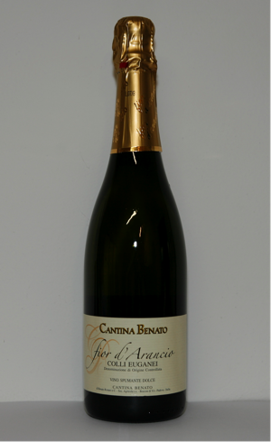

Ti trovi in: Homepage » Catalogo Vini » Vista Dettagliata Prodotto
Fior d'Arancio

- Etichetta:
- Colli euganei Fior d'Arancio D.O.C.G.
- Tipologia:
- Bianco
- Categoria:
- dolce
- Stato:
- spumante
- Uve:
- 100% Moscato giallo
- Provenienza:
- Boccon e Vo’
- Produzione:
- 120 q per ettaro
- Altitudine:
- 80/100 metri
- Terreno:
- argilloso e vulcanico esposto a sud-ovest
- Densità piante:
- 4000/5000 per ettaro allevate con sistema di doppio capovolto
- Periodo di raccolta:
- seconda decade di settembre
- Vinificazione ed affinamento:
- L’uva vendemmiata a mano viene sgranellata con acini interi, segue pressatura soffice per depressione, illimpidimento del mosto con il freddo. Avvio di fermentazione con lieviti selezionati ad una temperatura controllata di 18/20 ° c. Fino al raggiungimento di una gradazione alcolica di 5 gradi. Il vino così ottenuto viene stoccato in serbatoi a temperatura controllata e avviato poi in seguito alla spumantizzazione.
- Gradazione alcolica:
- 7.5% Vol.
- Colore:
- colore paglierino con riflessi dorati
- Note di degustazione:
- Ha spuma cremosa, non aggressiva,perlage fine e persistente. All’olfatto si riconoscono sentori di agrumi, fiori d’arancio e frutta gialla. Il suo sapore è intenso, dolce ed equilibrato, piacevolmente aromatico.
- Abbinamenti:
- principalmente con i dolci, a base di creme e frutta o biscotteria secca.
- Temperatura di servizio:
- 6°C
Torna al catalogo